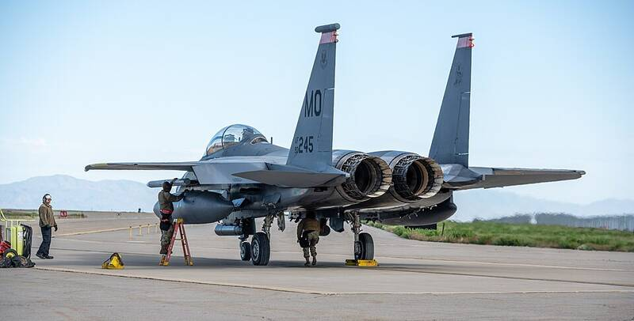

Mountain Home AFB Idaho Idaho · Military base · 43.041°N, 115.871°W Mountain Home maintainers preparing F-15E Strike Eagles. Photo: Staff Sgt. Joshua Hoskins, U.S. Air Force, Public domain (source) Air Force fighter base. 1 Open in the interactive Watcher Sources Mountain Home Air Force Base Wikipedia